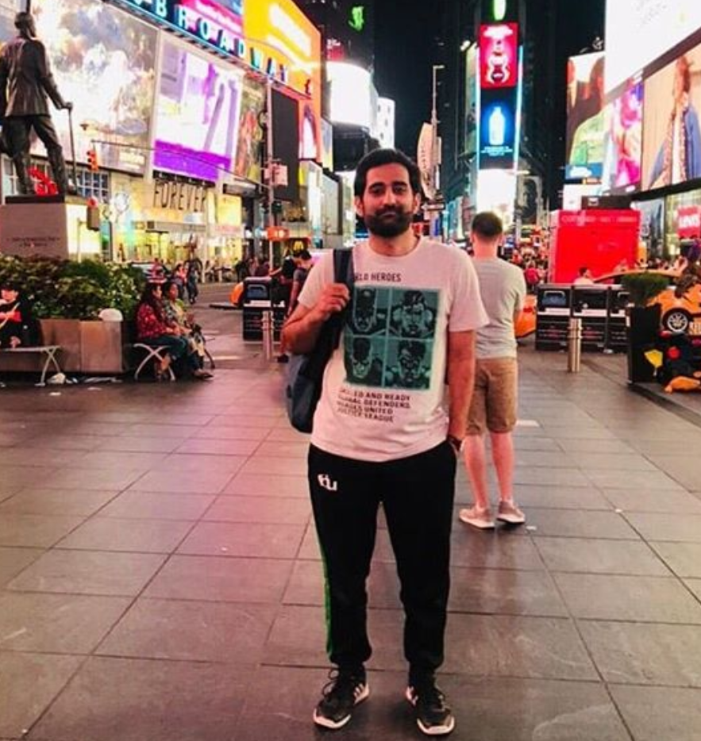
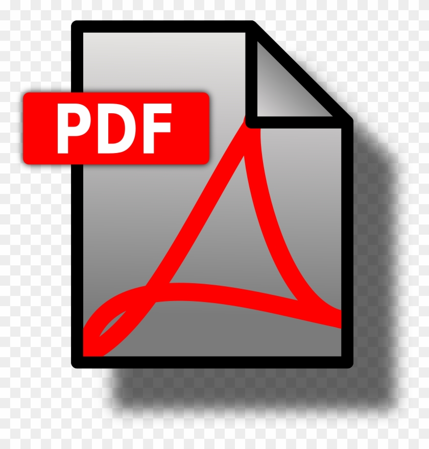

|
2020 July |

CanaryTrap: Detecting Data Misuse by Third-Party Apps on Online Social Networks.
Proceedings of Privacy Enhancing Technologies Symposium, PETS 2020, July 2020. |
|
2020 Sept |
Report: Analyzing Data Gathering and Sharing Online. |